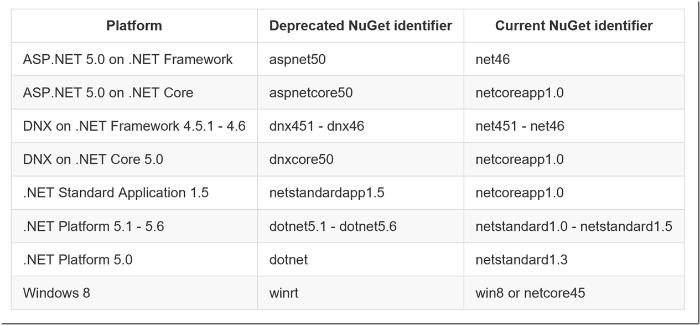

at the right corner, select which ative project with project.json file
those packages can put into project.json and it will be restored
from https://docs.nuget.org/ndocs/schema/target-frameworks

from https://gist.github.com/CESARDELATORRE/9d6a236f28056fa7bcd7c12c45deae22
{
"dependencies": {
"Microsoft.AspNetCore.Mvc": "1.0.0",
"Microsoft.AspNetCore.Server.IISIntegration": "1.0.0",
"Microsoft.AspNetCore.Server.Kestrel": "1.0.0",
"Microsoft.Extensions.Configuration.EnvironmentVariables": "1.0.0",
"Microsoft.Extensions.Configuration.FileExtensions": "1.0.0",
"Microsoft.Extensions.Configuration.Json": "1.0.0",
"Microsoft.Extensions.Logging": "1.0.0",
"Microsoft.Extensions.Logging.Console": "1.0.0",
"Microsoft.Extensions.Logging.Debug": "1.0.0",
"Microsoft.Extensions.Options.ConfigurationExtensions": "1.0.0"
},
"tools": {
"Microsoft.AspNetCore.Server.IISIntegration.Tools": "1.0.0-preview2-final"
},
"frameworks": {
"netcoreapp1.0": {
"imports": [
"dotnet5.6",
"portable-net45+win8"
],
"dependencies": {
"Microsoft.NETCore.App": {
"type": "platform",
"version": "1.0.0"
}
}
},
"net452": {
}
},
"buildOptions": {
"emitEntryPoint": true,
"preserveCompilationContext": true
},
"runtimeOptions": {
"configProperties": {
"System.GC.Server": true
}
},
"publishOptions": {
"include": [
"wwwroot",
"Views",
"Areas/**/Views",
"appsettings.json",
"web.config"
]
},
"scripts": {
"postpublish": [ "dotnet publish-iis --publish-folder %publish:OutputPath% --framework %publish:FullTargetFramework%" ]
}
}